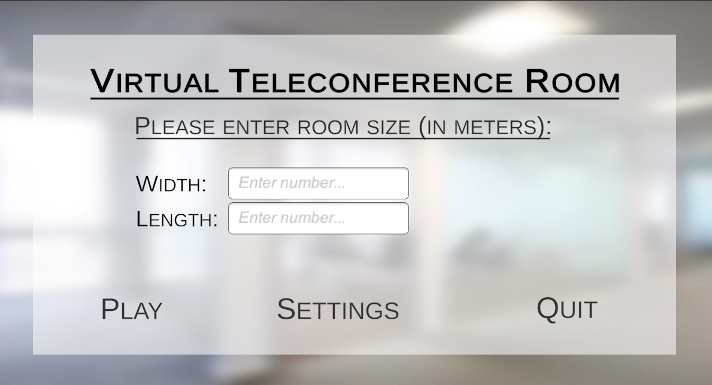
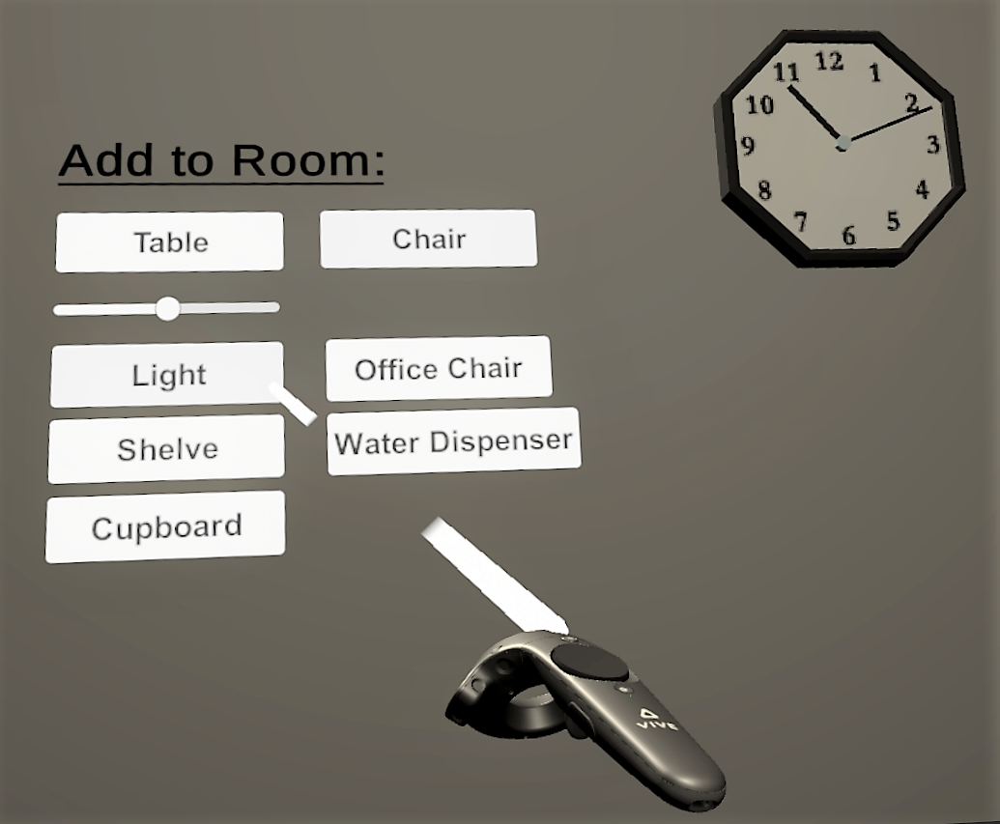
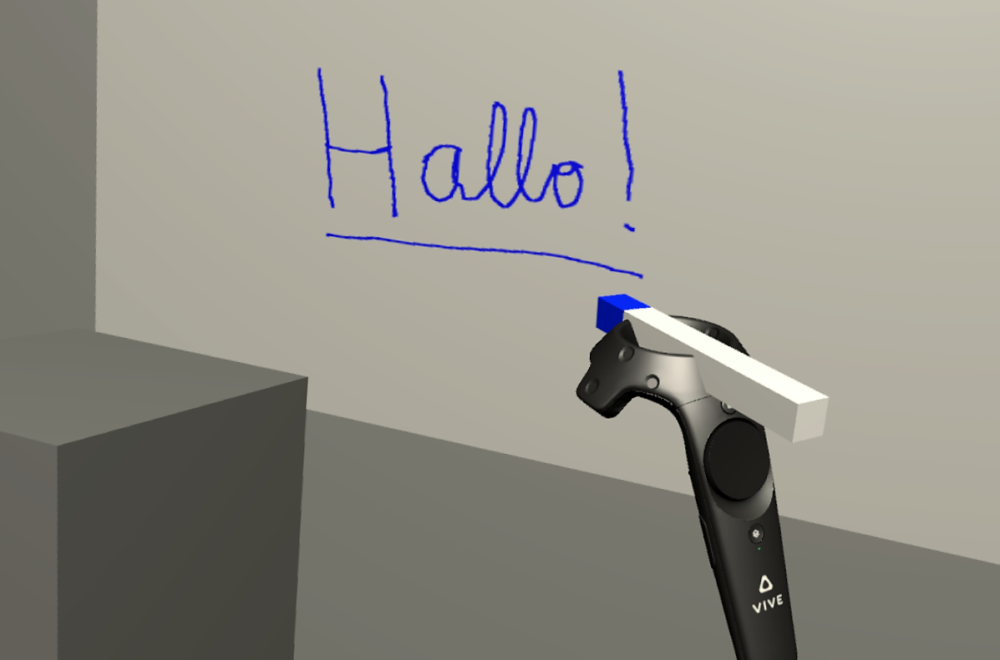

The motivation for developing an adaptable immersive virtual environment (IVE) for VR teleconferencing is that current video conferencing applications are limited in several ways.
They only provide 2D views of remote participants on a flat screen in a small scale, which limits the sense of co-presence and the ability to naturally communicate with gaze, gestures, posture and other nonverbal cues.
In contrast, VR technology enables creating a virtual meeting space where participants feel a true sense of co-presence as if they are together in the same physical space.
The properties of the virtual environment, such as room size, number of tables and chairs, are an important aspect of the conference experience.
It is believed that immersive virtual environments have potential benefits in improving spatial understanding and task performance.
The project focuses on the creation of a prototype of an adaptable IVE that can be used for VR-based teleconferencing in Unity.
Project characteristics
:
Title: Evaluation of immersive virtual environments and development of a prototype environment for virtual reality teleconferences
Team: 1 person (me)
Duration: September 2020 - February 2021
Project partner: TU Ilmenau
Implementation
The implementation of the adaptable immersive virtual environment (IVE) for VR teleconferencing involved the following key phases:
The Virtual Space:
The virtual space was designed and developed using the Unity and Blender.
Key features included:
Customizable room size, furniture, and lighting to match the user's physical environment
Ability to add and arrange virtual objects like tables, chairs, and the virtual whiteboard
Unity setup:
OpenVR
XR Interaction Toolkit
Hand animations: Default, Grip & Pinch
Colliders
Video 1 shows an example of the virtual teleconference room:

Graphical User Interface (GUI)
Video 1: Virtual Teleconference Room
Graphical User Interface (GUI):
Menu bar on top of the virtual space for users to adjust the environment settings
Interaction with the virtual objects was enabled through intuitive VR controller inputs
A virtual whiteboard application was integrated, enabling collaborative content creation and editing

User Interface (UI)
Virtual Whiteboard:
The virtual whiteboard was set up with the ability to draw, erase, and save notes and sketches
Specific methods were implemented to handle user interactions with the whiteboard
Implementation of Raycasts

Virtual Whiteboard
VR Controller integration:
The VR controllers were mapped to various functions, such as selecting, moving, and scaling objects
The controller button mapping was designed to provide an intuitive user experience
Multiplayer functionality:
Photon Realtime SDK for Unity
This would allow multiple users in remote locations to join the same virtual conference room
The virtual environment, including the room layout, furniture, and other objects, would be synchronized across all connected clients using Photon's networking APIs